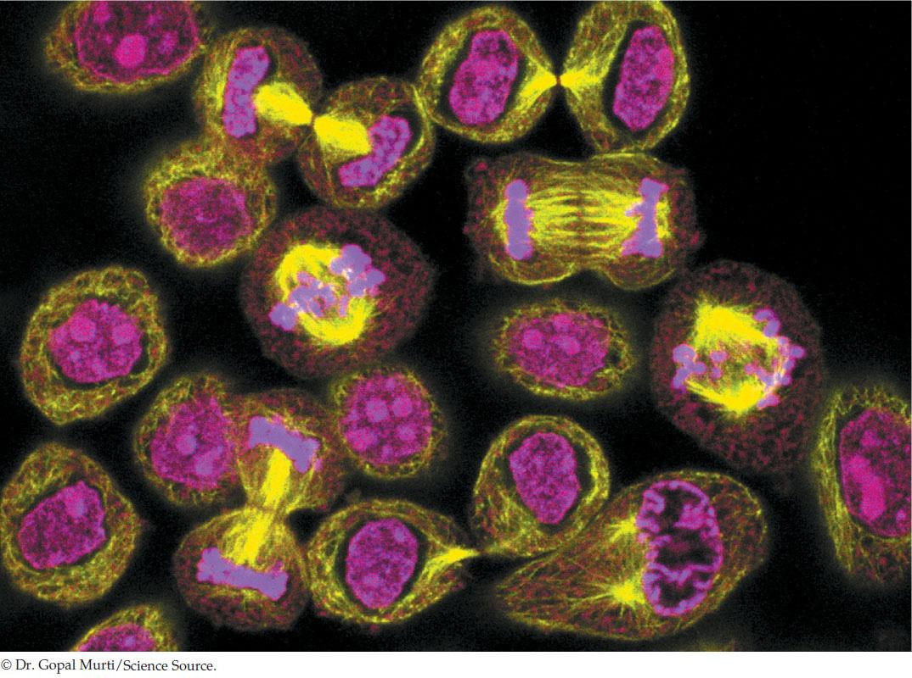

| 7 | The Cell Cycle and Cell Division |
|
KEY CONCEPTS
7.1 Different Life Cycles Use Different Modes of Cell Reproduction 7.2 Both Binary Fission and Mitosis Produce Genetically Identical Cells 7.3 Cell Reproduction Is Under Precise Control 7.4 Meiosis Halves the Nuclear Chromosome Content and Generates Diversity 7.5 Programmed Cell Death Is a Necessary Process in Living Organisms |

These cervical cancer cells are actively dividing; many of the cells are in various stages of mitosis and cytokinesis.
|
Ruth felt healthy and was surprised when she was called back to her physician’s office a week after her annual checkup. “Your lab report indicates you have early cervical cancer,” said the doctor. “I ordered a follow-up test, and it came back positive. At some point, you were infected with HPV.”
Ruth felt numb as soon as she heard the word “cancer.” Her mother had died of breast cancer in the previous year. The doctor’s statement about HPV—human paplliomavirus—did not register in her consciousness. Sensing Ruth’s discomfort, the doctor quickly reassured her that the cancer had been caught at an early stage and that a simple surgical procedure would remove it. Two weeks later, the cancer was removed and Ruth remains cancer-free. She was fortunate that her annual medical exam included a Papanicolau (Pap) test, in which the cells lining the cervix are examined for abnormalities. Since they were begun almost 50 years ago in Europe, Pap tests have resulted in the detection and removal of millions of early cervical cancers, and the death rate from this potentially lethal disease has plummeted.
The role of HPV in causing most cervical cancers was discovered only recently. The German physician Harald Zur-Hausen was awarded the Nobel Prize in 2008 for this discovery, and it has led to a vaccine to prevent future infections. There are many different types of HPV, and many of the ones that infect humans cause warts, which are small, rough growths on the skin. The types of HPV that infect tissues at the cervix get there by sexual transmission, and this is a common infection.
When HPV arrives at the tissues lining the cervix, it has one of two fates. Most of the time it enters the cells and turns them into HPV factories, releasing a lot of HPV particles into the mucus outside the uterus. These viruses can infect another person during a sexual encounter. But in some cases the virus follows a different, more sinister path. The viral DNA becomes incorporated into the DNA of the cervical cells, and the cells are stimulated to reproduce.
Cell reproduction in healthy humans is tightly controlled by a variety of mechanisms, but the virus-infected cells lose these controls. Understanding how cell division is controlled is clearly an important subject for the development of cancer treatments. But cell division is not just important in medicine. It underlies the growth, development, and reproduction of all organisms.
How does infection with HPV result in uncontrolled cell reproduction?